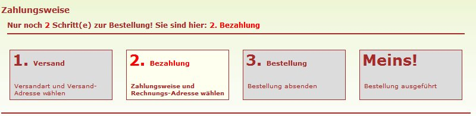
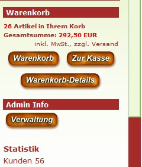
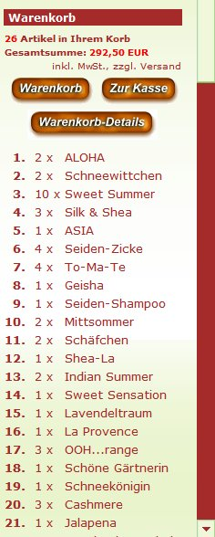
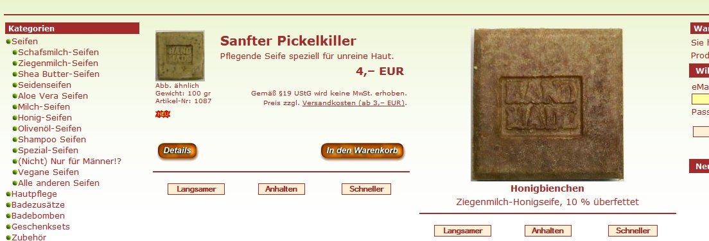
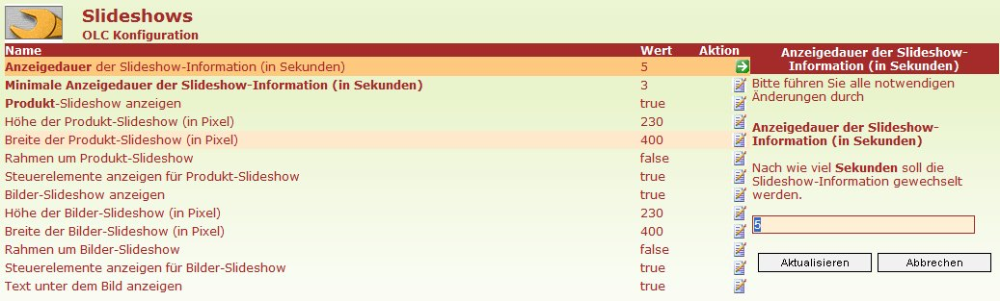

OL-Commerce v4/AJAX
Autor: Dipl.-Ing.(TH) Winfried Kaiser
http://www.seifenparadies.de
w.kaiser@fortune.de
© 2006 Dipl.-Ing.(TH) Winfried Kaiser, 24975 Husby
Diese Software basiert auf der Software "OL-Commerce v1.2.2.a", sie wird veröffentlicht auf Basis der "GNU General Public License".
Es wird vom Autor keinerlei
Gewährleistung für die Software
OL-Commerce
v4/AJAX
übernommen!
Eine Verpflichtung zur Behebung evtl. auftretender Fehler besteht nicht!
Der Einsatz dieser Software erfolgt ausschließlich(!) auf eigene Gefahr und Risiko des Anwenders!
Der Anwender hat dafür Sorge zu
tragen, dass er seinen aktuellen Software-
und Datenbestand vor Einsatz dieser Software
sichert,
so dass er im Fehlerfall jederzeit diesen Stand
wieder rekonstruieren kann.
Eine Testversion ist hier online zu sehen
Der Zugang als Administrator ist folgender:
Benutzer: test@test.com
Passwort: testtest
(Diese Version ist noch im Pre-Release Stadium, deshalb kann es passieren, dass nicht alles funktioniert.)
Installationshinweise: readme.html
Updatehinweise: ajax_aenderungen.html
"Multi-Shop"/"Multi-Datenbank": readme_multishop.html
Daten-Import: automatischer_daten_import.html
eBay_Konnektor: eBay-Konnektor.html
OL-Commerce v4.0a/AJAX ist eine wesentliche Erweiterung von OL-Commerce V1.2.2a, wobei insbesondere die vollständige Umstellung des kundenorientierten Teiles und des Admin-Bereiches von OL-Commerce auf die AJAX-Technologie einen Meilenstein in der Entwicklung von Shop-Software darstellt.
AJAX ist ein Akronym für die Wortfolge
Asynchronous
Javascript And
XML.
Es bezeichnet ein Konzept der Datenübertragung zwischen einem Internet-Server und dem
Browser, welches es ermöglicht, dass die HTML-Seite nicht,
wie üblich, mit jeder
Server-Anfrage komplett neu geladen werden muss! Das Novum besteht
in der Tatsache, dass nur gewisse Teile einer HTML-Seite sukzessive bei Bedarf
nachgeladen werden.
AJAX ist derzeit das "Hot-Topic" in der
Web-Entwicklung.
(Weitere Info dazu z.B. über
http://de.wikipedia.org/wiki/Ajax_(Programmierung).)
Warum AJAX-Technologien in OL-Commerce verwenden?
Es gibt mehrere Gründe dafür: u.a.
Schnellere Reaktion:
Da nur die Teile übertragen werden, die sich wirklich geändert haben, ist der Datenstrom sehr viel kleiner als konventionell. Zudem entfällt die Berechnung der nicht benötigten Teile, was einiges an Datenbankzugriffen und PHP-Aktionen einspart. Schließlich entfällt auch die Erstellung der kompletten "index.html" durch "Smarty". (Besonders beeindruckend ist das auch bei Fehlermeldungen, bei denen normalerweise immer die komplette Seite neu erstellt werden muss, um wenige Worte Text zu kommunizieren. Das mit AJAX-Technologie geänderte Verfahren überträgt nur noch den Meldungstext, und zeigt ihn in einer normalen WINDOWS-Box an, wie man das normalerweise von Desktop-Anwendungen gewohnt ist.)
Verbesserte Ergonomie:
Der auffälligste (und einzig sichtbare) Unterschied von AJAX-Anwendungen gegenüber konventionellen Web-Anwendungen ist der, dass sich der Bildschirm nicht mehr bei jeder Funktion neu aufbaut, sondern dass sich nur noch Teilbereiche auf dem Bildschirm ändern. Das beim Surfen normalerweise zu beobachtende komplette Löschen und den Neu-Aufbau der Seite entfällt! Die Bildschirmdarstellung ist stabil, nur der Inhalt einiger Bereiche ändert sich nach einem "Klick". Das web-übliche Geflacker und Gezappel beim Eintreffen neuer Informationen vom Server gehört damit der Vergangenheit an! Web-Anwendungen verhalten sich jetzt wie lokale Anwendungen.
Online Validierung:
Man kann über AJAX beim Ausfüllen von Formularen Informationen direkt im Hintergrund überprüfen, bzw. zusätzliche Daten einsteuern, so dass eine direkte Bedienerführung möglich ist.
Komplette Javascript-Kontrolle über den Shop:
Da man für den AJAX-Betrieb sowieso tief in das Innenleben des Shops einsteigen muss, kann man zusätzlich gleich einige nützliche Dinge mit erledigen, die das (lokale) Arbeiten mit dem Shop verbessern.
Beispiele:
| "Sticky"-Cart | Eine Warenkorb-Kopie, die immer sichtbar ist. Der Kunde sieht damit auch bei einer Bestellung im unteren Bereich der Produktliste, wie der Warenkorb sich ändert. | |||||||||||||||||||||||||||||||||||||||||||
| Lokale Produkt-Optionsauswahl (mit direkter Änderung des Warenkorbs!) |
Bei der Auswahl von Optionen wird nicht jedes mal der Server kontaktiert, sondern nur beim Ablegen in den Warenkorb. Auch die Optionsänderung von schon im Warenkorb befindlichen Produkten ist lokal möglich, wobei beim Aufruf zur Änderung gleich die gewählten Optionen aktiviert sind. | |||||||||||||||||||||||||||||||||||||||||||
| Lokale Warenkorb-Änderung (mit direkter Änderung des Warenkorbs!) |
Der Inhalt des Warenkorbs kann lokal geändert werden (Stückzahl, Optionen, Löschen). Der Server wird erst nach Abschluss aller Änderungen kontaktiert. | |||||||||||||||||||||||||||||||||||||||||||
| Direkte Änderung von Produktoptionen im Admin-Produktbereich | Produktoptionen können jetzt direkt im Produktformular geändert werden. | |||||||||||||||||||||||||||||||||||||||||||
| Verhinderung von Seiten-Reloads | Der Besucher kann den AJAX-Betrieb mit "F5", "Strg+R", "Strg+N", "Strg+O" oder "Backspace" nicht mehr stören, sondern nur noch kontrolliert navigieren. | |||||||||||||||||||||||||||||||||||||||||||
|
Neben der AJAX-Integration sind eine ganze Reihe von Verbesserungen eingeflossen, die vom Autor selbst entwickelt, verbessert oder für OL-Commerce adaptiert wurden. Diese sind u.a: |
||||||||||||||||||||||||||||||||||||||||||||
| 1. | Einbeziehung von Elm@r - Der elektronische Markt |
Einbindung der Elm@r-Programme für "Froogle"- und einige andere Export-Formate. Online Abfrage über das "shop.xml"-Format. Die "Elm@r"-Software ist in der Distribution enthalten. | ||||||||||||||||||||||||||||||||||||||||||
| 2. | Einbeziehung von chCounter - Besucherstatistiken für Websites |
Shop-Statistik bis auf Produkt-/Kategorieebene. Die "chCounter"-Software ist in der Distribution enthalten. | ||||||||||||||||||||||||||||||||||||||||||
| 3. | Google Sitemap | Erstellung einer Sitemap für Google, so dass eine bessere Indizierung erfolgen kann | ||||||||||||||||||||||||||||||||||||||||||
| 4. | BLZ-Aktualisierung anhand der Bundesbank-Daten | Die Daten der BLZ-Datenbank können anhand der Bundesbank-Daten automatisch aktualisiert werden | ||||||||||||||||||||||||||||||||||||||||||
|
|
||||||||||||||||||||||||||||||||||||||||||||
| 5. | Verpackungseinheiten (VPE) für Produkte | Für die Produkte kann eine Verpackungseinheit angegeben werden | ||||||||||||||||||||||||||||||||||||||||||
| 6. | Grundpreise für Produkte | Für Produkte mit unüblichen Mengeneinheiten kann der Grundpreis für eine übliche
Mengeneinheit
angegeben werden. (Dazu muss für das Produkt eine VPE definiert
werden!) Bei den Verpackungseinheiten (VPE) wird dazu die VPE wie folgt eingeben: VPE-Name, VPE-Art[, GRUNDPREIS-Anzeige-Name]
(z.B.: "cm,Länge,1m") Die VPE eines Artikels würde dann z.B. angezeigt als "Länge: 1cm". Da die Preisangaben-Verordung (PreisangabenVO) vorschreibt, dass bei "unüblichen" Mengen auch der Preis für eine "übliche" Menge anzugeben ist, kommt hier der Grundpreis ins Spiel. Wenn man eine "unübliche" Mengeneinheit verwendet, kann man dem Produkt dann einen Faktor ("Grundpreis-Faktor") zuordnen , der angibt, wie viel Einheiten des Produktes den Grundpreis ergeben. Im o.g. Beispiel würde man dann den Grundpreis-Faktor "100" angeben, um die übliche Mengeneinheit "1 Meter" (=100 cm) mit einem Preis zu versehen. Die Bildungsregel für die Grundpreis-Menge ist also: Grundpreis-Faktor VPE-Name Nun ist es allerdings so, dass das keine zulässige Mengeneinheit im Sinne der PreisangabenVO ist! Und hier kommt dann der Parameter "GRUNDPREIS-Anzeige-Name" ins Spiel: statt für die Grundpreis-Menge den Wert "100 cm" zu verwenden, würde der für "GRUNDPREIS-Anzeige-Name" definierte Wert "1 m" verwendet, so dass man damit wieder gesetzeskonform ist! Damit ist man jetzt voll flexibel in der Definition von VPEn und Grundpreisen. Man muss allerdings selbst aufpassen, dass der Grundpreis-Anzeigename und der Grundpreis-Faktor konsistent sind. Im Beispiel: Produkt VPE (1cm), Grundpreis-Faktor (100), Grundpreis-Anzeigename (1m)! Zur Info: §2, Abs. 3. PreisangabenVO: "Die Mengeneinheit für den Grundpreis ist jeweils 1 Kilogramm, 1 Liter, 1 Kubikmeter, 1 Meter oder 1 Quadratmeter der Ware. Bei Waren, deren Nenngewicht oder Nennvolumen üblicherweise 250 Gramm oder Milliliter nicht übersteigt, dürfen als Mengeneinheit für den Grundpreis 100 Gramm oder Milliliter verwendet werden. Bei nach Gewicht oder nach Volumen angebotener loser Ware ist als Mengeneinheit für den Grundpreis entsprechend der allgemeinen Verkehrsauffassung entweder 1 Kilogramm oder 100 Gramm oder 1 Liter oder 100 Milliliter zu verwenden. Bei Waren, die üblicherweise in Mengen von 100 Liter und mehr, 50 Kilogramm und mehr oder 100 Metern und mehr abgegeben werden, ist für den Grundpreis die Mengeneinheit zu verwenden, die der allgemeinen Verkehrsauffassung entspricht." |
||||||||||||||||||||||||||||||||||||||||||
| 7. | Preisinformation bei jedem Preis (Preisangabenverordnung (PAngV) | Bei jedem Preis wird angegeben, ob die
MwSt. enthalten, und Versandkosten nicht enthalten sind (mit einem
Link zum Content "Versandkosten").
Diese Anzeige ist abhängig vom Kundenstatus (mit/ohne MwSt.)! Der MwSt-Satz des Produktes wird mit angegeben. Es besteht auch die Möglichkeit, den Shop als Kleinunternehmer gemäß §19 UStG zu betreiben. Dann erfolgt bei den Preisen ein entsprechender Hinweis. (Siehe auch 46. Shop konfigurierbar für Kleinunternehmer gemäß §19 UStG) |
||||||||||||||||||||||||||||||||||||||||||
| 8. | Disclaimer für Bilder | Es wird der Text "Abb. ähnlich" unter den Bildern angezeigt | ||||||||||||||||||||||||||||||||||||||||||
| 9. | Bei der Bestellung wird die Bestätigung der AGBn und der Kenntnisnahme des Widerrufsrechts erzwungen | Der Besteller muss beide Informationen bestätigen. Zudem wird ein Link zu einer PDF-Version der AGBn und der Widerrufsbelehrung angeboten. (AGBn und der Widerrufsbelehrung in einem nicht änderbaren Format.) Diese PDF-Dateien müssen im Verzeichnis "lang/xxxxx/agb.pdf" und "lang/xxxxx/fernag.pdf" vorhanden sein. ('xxxxx' stellt die Bezeichnung aller verfügbaren Sprachen dar ('english', 'german') . | ||||||||||||||||||||||||||||||||||||||||||
| 10. | Produkte mit Preisen <= 0 werden angezeigt, aber die Produkte können nicht bestellt werden. |
Ein Produktpreis von "0" bewirkt, dass das Produkt zwar angezeigt wird, aber
nicht bestellbar ist! Hat ein Produkt einen Preis < 0, dann wird zusätzlich die Meldung angezeigt, dass es derzeit ausverkauft ist. Wenn dann gleichzeitig im Produkt noch ein Erscheinungsdatum angegeben ist, dann wird dieses zusätzlich als voraussichtliches Verfügbarkeitsdatum angezeigt. Wenn dieses Erscheinungsdatum dann erreicht ist, wird das Produkt automatisch wieder bestellbar. |
||||||||||||||||||||||||||||||||||||||||||
| 11. | Gleichartige Auflistungen werden mit demselben Code und demselben Template erstellt. | Alle Produklisten (Kategorie-Liste, Neue Produkte, Sonderangebote, Cross-Selling, Also-Purchased, Upcoming Products, Such-Ergebnisse) werden mit demselben Code und auf Basis desselben Templates ("template/module/product_listing/product_listing_v1.html") erstellt. Das erspart eine Menge redundanten Code, alle diese Listen sehen gleich aus, und der Pflegeaufwand dafür reduziert sich enorm. | ||||||||||||||||||||||||||||||||||||||||||
| 12. | AJAX-basierter Attributmanager im Admin-Produktbereich | Auf der Admin-Seite wurde der AJAX-basierte Attributmanager in die Produktverwaltung integriert, mit dem die Attributverwaltung jetzt auf Produktebene stattfindet, eingebaut. (Adaption einer "osCommerce"-Contribution.) | ||||||||||||||||||||||||||||||||||||||||||
| 13. | Lokale Bestell-Attribut-Verwaltung im Kundenbereich | Die Attributauswahl bei Produkten (Varianten) wird zunächst lokal durchgeführt (mit Änderung des Warenkorbs), und erst später auf dem Server aktualisiert. | ||||||||||||||||||||||||||||||||||||||||||
| 14. | Lokale Warenkorbverwaltung im Kundenbereich | Der Warenkorb (Stückzahländerungen, Löschungen) wird zunächst lokal geändert (mit Änderung des Warenkorbs), und erst später auf dem Server aktualisiert. | ||||||||||||||||||||||||||||||||||||||||||
| 15. | "Sticky-Cart" (immer sichtbarer Warenkorb) | Der "Sticky-Cart" ist eine Warenkorbkopie,
die dann angezeigt wird, wenn der feste Warenkorb aus dem Bild scrollt.
So sieht der Kunde auch beim Einkauf am Ende der Produktliste sofort die
Änderungen im Warenkorb. Wenn der "Sticky-Cart" angezeigt wird, dann hat man die Möglichkeit, mit Klick auf "Warenkorb schließen" diesen auszublenden. Der "Sticky-Cart" verschwindet dann permanent. Im Warenkorb selbst wird aber dafür jetzt der Text "Warenkorb permanent anzeigen" angezeigt, mit einem Klick auf diesen kann der "Sticky-Cart" dann wieder eingeschaltet werden. Die Verwendung des "Sticky-Cart" ist standardmäßig aktiviert, sie kann aber über einen Parameter im Admin-Bereich (Konfiguration/Mein Geschäft/Den Warenkorb permanent anzeigen (Sticky-Cart)) festgelegt werden. |
||||||||||||||||||||||||||||||||||||||||||
| 16. | AJAX-basierte Online-Validierung der Bankleitzahl und Kontonummer in "D" | Bei der Eingabe der Bankverbindung beim Bestellvorgang wird diese sofort gegen eine BLZ-Datenbank validiert. Für D wird auch die Kontonummer auf formale Stimmigkeit für die gewählte Bank geprüft. | ||||||||||||||||||||||||||||||||||||||||||
| 17. | Geändertes Fehleranzeigeverfahren | Fehlersituationen werden jetzt (im AJAX-Betrieb) sofort über eine Meldungsbox angezeigt, und nicht wie bisher als Teil einer Rückgabeseite. | ||||||||||||||||||||||||||||||||||||||||||
| 18. | Wartungsarbeiten verwalten | Im Admin-Bereich kann der Shop für Wartungsarbeiten stillgelegt werden, mit einer optionalen Vorwarnung. Im Wartungsmodus können nur noch bestimmte Bediener auf den Shop zugreifen. | ||||||||||||||||||||||||||||||||||||||||||
| 19. | Verwendung des "SPAW"-Editors (Produkt-Texte) mit Internet-Explorer und Firefox. | Eine Version des Editors kann jetzt auch mit Firefox verwendet werden. | ||||||||||||||||||||||||||||||||||||||||||
| 20. | Verbessertes Kalendermodul (Produkte) | Das Kalendermodul wurde auf deutsche Verhältnisse umgestellt (Feiertage!), die Datums-Daten werden jetzt im deutschen Format eingegeben. | ||||||||||||||||||||||||||||||||||||||||||
| 21. | Datenbank-Tabellen-Präfix | Die Datenbank-Tabellen können mit einem Präfix versehen werden. Es ist damit möglich, mehrere Shops in einer MySQL-Datenbank zu organisieren, da man eindeutige Tabellen-Namen hat. | ||||||||||||||||||||||||||||||||||||||||||
| 22. | Der Shop funktioniert auch mit MySQL 5.0! | Die MySQL-Version 5.x hat eine teilweise geänderte SQL-Syntax (vor allem bei "JOIN"s), die das Funktionieren von OL-Commerce 1.x/xtCommerce 2.x mit dieser MySQL-Version verhindern. Die notwendigen Änderungen wurden berücksichtigt. | ||||||||||||||||||||||||||||||||||||||||||
| 23. | Schnittstelle zu CAO-Faktura | Es wurden die notwendigen Schnittstellen zu CAO-Faktura (bis Version 1.3) integriert. | ||||||||||||||||||||||||||||||||||||||||||
| 24. | Erweiterte Information bei der Kunden-Internet-Adresse | Neben der IP-Adresse wird auch der logische (DNS-)Name
des aufrufenden Computers und das Datum gespeichert. Durch Anzeige des symbolischen DNS-Namens
ist i.d.R. sofort sichtbar, wer der Provider des Besuchers ist. Das
Datum erlaubt evtl. die Rückverfolgung, wem diese IP beim Provider
zugeordnet war. Damit
kann der Missbrauch wahrscheinlich besser verhindert werden. Format: 195.4.32.84 (F2054.f.strato-dslnet.de) -- Datum: 22.04.2006 07:28:18 |
||||||||||||||||||||||||||||||||||||||||||
| 25. | Die aktuelle "Smarty"-Version wurde eingebaut. | Die Version 2.6.13 vom 9.3.2006 ist Bestandteil der Distribution. | ||||||||||||||||||||||||||||||||||||||||||
| 26. | Sendungscode für Versandtracking | Es besteht die Möglichkeit, beim Versand einer Sendung (Admin-Bereich) den
"Tracking-" bzw. "Sendungs"-Code des Versenders mit einzugeben. Darüber kann der Kunde den Status seiner Sendung nach dem Versand bei dem Versender im Internet überprüfen. Dieser "Tracking-Code" wird auch in der Bestellstatus-eMail beim Versand der Bestellung mitgesendet, so dass der Kunde eine einfache Bestellverfolgung vornehmen kann. Auch im "Bestellungen"-Bereich des Admins wird bei vorhandenem Sendungscode ein entsprechender Link eingebaut, so dass auch von hier aus die Sendung einfach verfolgt werden kann. Im Kunden-Bereich "Konto/Bestellhistorie" wird das gleichermaßen eingebaut, so dass auch von hier aus die Sendung einfach verfolgt werden kann. Technisch ist das so gelöst, das alle relevanten(!) OL-Commerce Versand-Module (PHP-Klassen im Verzeichnis "includes/modules/shipping") eine neue Methode "get_track_url()" erhalten haben, die die vom Versender für das Versandtracking definierte URL zurückliefert. An der Stelle der Tracking URL, an der der Sendungscode steht, muss '#track_code#' als Platzhalter stehen! An der Stelle der Tracking URL, an der die PLZ steht, muss '#post_code#' als Platzhalter stehen! Es muss in den verwendeten Versandmodulen überprüft werden, ob die notwendige URL
für das Tracking dort schon definiert ist. Wenn nicht, muss diese ermittelt und dort eingetragen werden! Die Methode "get_track_url" hat folgenden Code:
function get_track_url()
{
//$track_url=URL used for tracking;
// An der Stelle der Tracking URL, an der der Sendungscode steht, muss '#track_code#'
als Platzhalter stehen!
// An der Stelle der Tracking URL, an der die PLZ steht, muss '#post_code#' als Platzhalter
stehen!
//Beispiel Deutsche Post AG/DHL
//$track_url='http://nolp.dhl.de/nextt-online-public/set_identcodes.do?
lang=de&zip=#post_code#&idc=#track_code#';
return $track_url;
} |
||||||||||||||||||||||||||||||||||||||||||
| 27. | Überprüfung der Kunden-Adresse im Internet | Es werden folgende Prüfungen
online über das Internet durchgeführt:
Damit kann der Admin prüfen, ob die Kundenadresse plausibel ist. |
||||||||||||||||||||||||||||||||||||||||||
| 28. | Vereinheitlichung der Masken zur Eingabe/Anzeige von Kundendaten | In OL-Commerce werden in 4 verschiedenen Programmen (Admin- und Kundenbereich) die Formulare für die Kundendaten jeweils unabhängig aufgebaut/und geprüft. Diese Redundanz wurde eliminiert, so dass alle Formulare nun mit einer einzigen Routine angezeigt bzw. geprüft werden. Das reduziert den Pflegeaufwand und garantiert ein einheitliches Aussehen der Formulare. (Zudem war das die Voraussetzung zu einer AJAX-basierten Adressen-Validierung (PLZ, ORT). | ||||||||||||||||||||||||||||||||||||||||||
| 29. | Kunden-eMail-Format wird auf kundenebene festgelegt | Das eMail-Format, das der Kunde erhält (HTML, TEXT), wird auf kundenebene festgelegt, nicht mehr auf systemebene! Jeder Kunde kann selbst entscheiden, welches Format er erhält. | ||||||||||||||||||||||||||||||||||||||||||
| 30. | Optimierung der Preis- und Steuer-Routinen | Die (wirklich hirntoten) Preis- und Steuer-Routinen von OL-Commerce wurden optimiert. (Für jede Preisdarstellung wurden 4 Datenbankzugriffe(!) gemacht. Diese 4 Datenbankzugriffe werden jetzt nur noch einmal pro Programmdurchlauf gemacht.) | ||||||||||||||||||||||||||||||||||||||||||
| 31. | Sichere "Tell-a-friend"-Funktion | Als Schutz vor Missbrauch
dieser Funktion zum SPAM-eMail-Versand wird ein (graphischer)
Sicherheits-Code angezeigt, den der Besucher zur Kontrolle mit eingeben muss.
(Wie bei der "Newsletter"-Funktion.) Entgegen der bisher weitgehend verbreiteten Ansicht, dass die "Tell-a-friend"-Funktion grundsätzlich wettbewerbswidrig sei, hat das OLG Nürnberg in einem Verfahren gegen das Versandhaus "Quelle" entschieden, dass dies nur dann zutrifft, wenn der Anbieter mit der Empfehlung durch den Besucher in der eMail gleichzeitig noch eigene Werbung versendet. Weiteres dazu siehe z.B. hier. Zudem kann im Admin-Bereich noch festgelegt werden, ob nur Besucher mit einem Konto diese Funktion verwenden dürfen. "Quelle" hat übrigens Revision beim BGH eingelegt, und packt immer noch fleißig eigene Werbung in seine "Tell-a-friend"-eMails. Wer deswegen dennoch "kalte Füße" hat, sollte die "box_TELL_A_FRIEND" aus der "index.html" entfernen. |
||||||||||||||||||||||||||||||||||||||||||
| 32. | Umfangreiche Online-Validierung |
Man kann über AJAX beim Ausfüllen von Formularen Informationen direkt im Hintergrund überprüfen, bzw. zusätzliche Daten einsteuern, so dass eine direkte Bedienerführung möglich ist. So wird bei der Eingabe der Bankverbindung bei einer Bestellung nach Eingabe der Bankleitzahl diese direkt überprüft. Falls diese korrekt ist, wird der Bankname zurückgeliefert, und in das entsprechende Feld eingetragen. Kann die Bankleitzahl nicht ermittelt werden, erfolgt eine Fehlermeldung. Sind mehrere Möglichkeiten vorhanden (eine BLZ gilt für mehrere Filialen, oder es wurden nur Teile einer BLZ eingegeben), werden diese in einer Auswahlbox im Formular angezeigt, und der Bediener kann daraus die zutreffende auswählen. Für Deutschland wird bei der Eingabe der Kontonummer mit einem Prüfziffern-Algorithmus direkt geprüft, ob diese für die gewählte Bank formal(!) richtig ist. (Damit kann natürlich nicht geprüft werden, ob diese Konto dem anmeldenden Kunden gehört.) Bei der Anlage eines neuen Kunden-Kontos kann überprüft
werden:
Für die Punkte 4. und 5. gilt zusätzlich: Wenn die Verifizierung fehl schlägt, wird der Besucher darauf hingewiesen. Er kann den eingegebenen Wert aber trotzdem akzeptieren, weil diese beiden Verifizierungsverfahren nicht 100% sicher sind. (Die Telefon-Nummer muss z.B. nicht im Telefonbuch verzeichnet sein; nicht alle Mail-Server beantworten die Frage nach der eMail-Adresse korrekt.) Diese beiden Prüfungen werden nur durchgeführt, wenn im Admin-Bereich die Online-Validierung der eMail-Adresse aktiviert wurde. |
||||||||||||||||||||||||||||||||||||||||||
| 32. | 'Sitemap'-Modul |
Das vorhandene 'Sitemap'-Modul wurde lauffähig gemacht und
überarbeitet. Am Anfang von "box_CONTENT" wurde der Link dazu eingebaut. Damit kann ein kompletter Überblick über alle Produkt- und -Unterkategorien dargestellt werden. |
||||||||||||||||||||||||||||||||||||||||||
| 33. | Versandkostenfreie Lieferung |
Man kann im Admin-Bereich einen Wert für die versandkostenfreie Lieferung
angeben (Bestellwert, ab dem versandkostenfrei geliefert wird), und zwar für
Inland uns Ausland getrennt. Diese Werte werden durch Komma getrennt in das
vorgesehene Feld eingegeben (Wert Inland,Wert
Ausland). Menü: "Admin/Module/Versandart Bei Checkout wird dann angezeigt, wie viel noch bestellt werden muss, um die Versandkosten zu sparen. |
||||||||||||||||||||||||||||||||||||||||||
| 34. | Modifiziertes Modul "also_purchased_products.php" |
Man kann im Modul "includes/modules/also_purchased_products.php"
(das anzeigt, welche anderen Produkte zusammen mit einem Produkt verkauft
wurden), angeben, wie viele Produkte darin angezeigt werden sollen. (Befehl
z.B.: "$total_also_purchased=olc_rand(5,8);
//Nr. of products to display". Zufallsanzahl zwischen
5 und 8
Produkten.)
Der Trick dabei ist, dass, wenn weniger als die gewählte Anzahl von Produkten aus der Datenbank ermittelt werden, das System diese Liste mit zufällig ausgewählten Produkten auffüllt. (Sieht halt besser aus!) Wird dies nicht gewünscht, ist der o.g. Befehl wie folgt zu ändern: "$total_also_purchased=0;" |
||||||||||||||||||||||||||||||||||||||||||
| 35. | Änderung bei der Eingabe der Zahlungsweise beim "Checkout" | Bei der Eingabe der Zahlungsweise beim "Checkout" werden die Felder zur Eingabe der Bankverbindung jetzt erst dann angezeigt, wenn die Zahlungsweise "Lastschriftverfahren" gewählt wird. | ||||||||||||||||||||||||||||||||||||||||||
| 36. | Überarbeitung des "Newsletter"-Moduls |
Das "Newsletter"-Modul wurde optimiert und überarbeitet.
Beim Austragen aus der Newsletter-Liste wird jetzt auch eine Bestätigungs-eMail versandt. Beim Versand von Newslettern (Admin-Bereich) wird jetzt automatisch ein Link zur Abmeldung des Newsletters eingebaut. Weiterhin wurde die Möglichkeit geschaffen, ein Impressum einzubinden. Das Programm erwartet dazu die Datei "lang/german/impressum.html", in der das Impressum definiert ist. Dieses Impressum wird, nach dem Deaktivierungslink an das Ende jedes Newsletters gehängt. Die Newsletter werden im HTML- bzw. TEXT-Format verschickt, je nachdem welches Format der Kunde wünscht. Das Format des Impressums wird automatisch aus dem HTML- auch in das TEXT-Format konvertiert Damit dürfte auch diese beiden potentiellen Abmahnprobleme abgesichert sein. Ein Impressum könnte wie folgt aussehen (ohne Gewähr für die rechtliche Richtigkeit!): Impressum
Shop Name eMail: Vertretungsberechtigter Geschäftsführer:
Registergericht: Umsatzsteuer-Identifikationsnummer gemäß § 27 a Umsatzsteuergesetz: DE Inhaltlich Verantwortlicher gemäß § 6 MDStV:
|
||||||||||||||||||||||||||||||||||||||||||
| 37. | Überarbeitung des PDF-Exports (Erstellung eines PDF-Katalogs) |
Der PDF-Export (Erstellung eines Produkt-Katalogs) wurde in die Software mit aufgenommen. Da das Ganze bisher doch etwas rustikal implementiert war (nach dem Ende des Exports erschien nur ein weißer Bildschirm mit einer Erfolgsmeldung (tödlich für den AJAX-Betrieb)), wurde das Modul so überarbeitet, dass es sich nun wie alle Programme ordentlich in den Rahmen einfügt. Zudem werden nun noch Artikel-Nummer, Kurzbeschreibung (diese wird auf bis zu 2 Zeilen umbrochen), Verpackungseinheit und der Grundpreis exportiert, weil man sonst ja gar nicht recht weiß, um was es da geht. Zudem wurde die Spaltenzahl für die Darstellung der Produkte von 3 auf 2 reduziert, damit man ein wenig mehr Platz für die Infos hat. (Über einen Programm-Parameter kann man die Spaltenzahl aber wieder auf 3 erhöhen.) Schließlich wurde auch im Kundeninterface eine Möglichkeit geschaffen, den PDF-Katalog anzufordern, wobei dann die PDF-Daten im Browser dargestellt, und nicht in eine Datei exportiert werden. So können auch die Kunden einen Gesamtkatalog ausgeben lassen! (Wenn man viel Produkte hat, sollte man das allerdings entfernen, da das dann recht lange dauert und viele Ressourcen braucht.)
Im Zuge der Überarbeitung wurde die Klasse "fpdf.php" (die die PDF-Datei erstellt) dahingehend erweitert, dass man bei der Definition von Farben für die Textausgabe (und anderes) jetzt statt der RGB-Farb-Werte auch die CSS-Namen von Farben verwenden kann. (SetColor('brown') ist halt aussagefähiger, als SetColor(165,42,42)). Die möglichen Farben und deren Namen sind in "admin\includes\classes\fpdf\named_colors_to_use_with_fpdf.htm" dargestellt. Die Farbdefinitionen werden aus den Definitionen für Punkt 43. (PDF-Datenblatt) entnommen! |
||||||||||||||||||||||||||||||||||||||||||
| 38. | Die Speicherung der Session-Daten wird (zwangsweise) in der Datenbank vorgenommen | Da das Internet voll ist von Berichten zu dem Fehler "Fatal error: session_start(): Failed to initialize storage module" bei Verwendung von Dateien als Ort für die Speicherung der Session-Daten, wird diese Option bei der Installation nicht mehr angeboten. | ||||||||||||||||||||||||||||||||||||||||||
| 39. | Überprüfung auf Konsistenz der Verpackungseinheiten (VPE) | Wenn Verpackungseinheiten definiert wurden, dann wird beim Absenden einer Produktseite geprüft, ob die Anzeige der VPEn definiert wurde. Wenn ja, wird der VPE-Wert geprüft, andernfalls wird rückgefragt, ob das dennoch Ok ist. Wurde die Anzeige der VPE definiert, und hat der VPE-Wert einen unüblichen Wert, so wird geprüft, ob auch die Information für den Grundpreis definiert wurde. | ||||||||||||||||||||||||||||||||||||||||||
| 40. | Vereinheitlichung der angezeigten und der gedruckten Produkt-Info | Der Datenblatt-Druck verwendet jetzt denselben Programmcode und dasselbe Template ("templates\mein_template\module\product_info\product_info_v1.html") wie die Anzeige der Produkt-Info. Das verbessert die optische Konsistenz und den Pflegeaufwand für das Programm und das Template. | ||||||||||||||||||||||||||||||||||||||||||
| 41. | Anzeige der Produkte aus der Kategorie "TOP" auf der Startseite. |
Die Produkte dieser Kategorie werden auf der Startseite angezeigt.
|
||||||||||||||||||||||||||||||||||||||||||
| 42. | Konfigurierbare Einbindung des "Affiliate" Moduls | Die Verwendung des "Affiliate"-Moduls kann jetzt über einen Parameter im Admin-Bereich (Konfiguration/Mein Geschäft/"Affilliate"-Programm aktivieren) bestimmt werden. | ||||||||||||||||||||||||||||||||||||||||||
| 43. | PDF-Datenblatt |
Die Produkt-Information kann vom Kunden (neben dem Ausdruck des
HTML-Formats) nun auch im PDF-Format erstellt werden. (Dies ist die Adaption
einer osCommerce-Contribution, die allerdings zu fast 80% neu entwickelt
wurde, da sie doch noch etwas zu rustikal war (fest vorgegebene Farben, Layout,
kein Impressum im Datenblatt, aufgeblähter Code u.v.m..) In der Produkt-Beschreibung werden folgende HTML-Formate in das Datenblatt umgesetzt: "<p></p>", "<br>", "<b></b>" so dass diese Formatierungen auch im PDF-Datenblatt erhalten bleiben. In der Seite zur Anzeige der Produkt-Information ist dazu, neben dem schon bisher vorhandenen "Drucken"-Button, eine Button zur Erstellung des PDF-Datenblatts sichtbar. Die Konfiguration des Datenblatts erfolgt weitgehend Admin-Konfig-Bereich (Konfiguration/PDF-Datenblatt-Generator). Die Farbauswahl der einzelnen Datenblatt-Bereiche kann man dabei sehr bequem
auf Basis der CSS-Farbdefinitionen direkt aus einer Farbtabelle auswählen, so
dass man direkt weiß, wie das aussieht. Durch Anklicken einer Farbzelle wird
eine Farbe dann selektiert. (In der Original-Contribution musste man die
Farbwerte als RGB-Zahlenwerte angeben, ein totaler Blindflug!)
|
||||||||||||||||||||||||||||||||||||||||||
| 44. | Der Javascript-basierte HTML-Editor "htmlarea" wurde aus der Distribution entfernt | Der Javascript-basierte HTML-Editor "htmlarea" wird in OL-Commerce nicht mehr verwendet und daher aus der Distribution entfernt. (Es wird nur noch der (bessere) "SPAW"-Editor verwendet.) | ||||||||||||||||||||||||||||||||||||||||||
| 45. | Überarbeitung des Newsletter Versand-Moduls |
Das Newsletter Versand-Modul wurde fehlerbereinigt, und so erweitert, dass bei
jedem Newsletter automatisch ein Link zum Abmelden von den Newslettern
angehängt wird (eine rechtliche Vorgabe in Deutschland, man hat sonst
leicht wieder eine Abmahnung "am Hals"). Gleichzeitig wurde eine bisher im Programm festgelegte Konstante (die Anzahl der in einem Durchlauf zu versendenden Newsletter eMails) im Admin-Bereich konfigurierbar gemacht. ("Konfiguration/eMail Optionen/Newsletter - Anzahl der eMails pro "send"-Durchlauf "). Dort wird festgelegt, wie viele eMails das Newsletter-Programm in einem Durchlauf sendet. Dies ist notwendig um Skript-Timeouts zu verhindern, wenn der Vorgang zu lange läuft. Das Programm verarbeitet die angegebene Anzahl von eMails, ruft sich dann selbst wieder neu auf um den Rest zu verarbeiten, so lange, bis alle eMails versendet sind. |
||||||||||||||||||||||||||||||||||||||||||
| 46. | Shop leicht konfigurierbar für Kleinunternehmer gemäß §19 UStG |
Wenn man als Kleinunternehmer gemäß §19 UStG tätig ist, und somit keine MwSt. erheben
und abführen muss, dann kann man den Shop sehr einfach entsprechend konfigurieren. ("Admin/Konfiguration/Mein Geschäft/Shop
als Kleinunternehmer gemäß §19 UStG führen"). Bei den Preisen wird dann ein entsprechender Hinweis angezeigt. |
||||||||||||||||||||||||||||||||||||||||||
| 47. | Automatische Ermittlung der geringsten Versandkosten für den Preis-Disclaimer | Der bei allen Preisen angezeigte Preishinweis gibt u.a. die Mindestversandkosten an. (Standardmäßig z.B. "Preis inkl. 16% MwSt. und zzgl. Versandkosten (ab 3,00 EUR) (Für genauere Info anklicken!"). Diese Mindestversandkosten musste man bisher selbst manuell in die Konfigurationsdaten einbringen, jetzt werden diese aber automatisch aus allen konfigurierten Versandmodulen ermittelt. | ||||||||||||||||||||||||||||||||||||||||||
| 48. | Vereinheitlichung der Kalendermodule |
Im Admin-Bereich von OL-Commerce werden 2 verschiedene JavaScript-Kalendermodule
für die Eingabe von Datumswerten verwendet: "spiffyCal" und "calendarcode"
(letzterer nur verwendet in "admin/specials.php").
Da "spiffyCal" das bessere Modul ist, wurde "specials.php" auf die Verwendung von "spiffyCal" umgestellt, so dass "calendarcode" aus der Distribution entfernt werden konnte. "spiffyCal" selbst wurde auf deutsche Verhältnisse umgestellt (Tages-/Monatsnamen, Feiertage), Datumseingaben werde jetzt im deutschen Datumsformat ("TT.MM.JJJJ") vorgenommen. |
||||||||||||||||||||||||||||||||||||||||||
| 49. | Geänderte Preisdarstellung | Preise mit Nullen als Dezimalstellen (wie "5,00 EUR") werden jetzt in der üblichen Schreibweise "5,– EUR" dargestellt. | ||||||||||||||||||||||||||||||||||||||||||
| 50. | Verwendung des "Cool-Menu"-Menü-Systems für die Kategorien-/Produktauswahl |
"Cool-Menu" ist ein Javascript/CSS-basierendes DHTML-Menü. Anstelle der Standard-OL-Commerce Kategorienauswahl kann nun alternativ die Auswahl über dieses dynamische Menü erfolgen, wie man es von Desktop-Anwendungen her kennt. Dieses Menü kann nur im AJAX-Modus (bei eingeschaltetem JavaScript) verwendet werden! Um die Verwendung des dynamischen Menüs zu Aktivieren, muss in "includes/configure.php" folgender Code eingefügt werden: define('USE_COOL_MENU',true) Ist dieser Eintrag nicht vorhanden, oder JavaScript nicht aktiv, wird die Standard-OL-Commerce Kategorienauswahl verwendet. Wenn in "templates/mytemplate/images" die Datei "bullet.gif" vorhanden ist, wird diese vor dem Kategorien-Text angezeigt. Am Ende der "stylesheet.css" des Templates sind die CSS-Definitionen für das "Cool-Menu" vorhanden. Bei dieser Funktion handelt es sich um eine an Smarty/AJAX angepasste Variante einer osCommerce-Contribution.
|
||||||||||||||||||||||||||||||||||||||||||
| 51. | "AJAX"-ifizierung des Admin-Bereichs Muss zurückgestellt werden, da derzeit kein Datei-Upload über AJAX möglich ist! |
Eine Teil-"AJAX"-ifizierung des
Admin-Bereichs konnte ebenfalls erreicht werden (nur für den
Internet-Explorer) Im Prinzip ist der Admin-Bereich für den
AJAX-Betrieb eigentlich maximal ungeeignet, da der von den Programmen erzeugt
HTML-Code einfach bei der Entstehung mit dem PHP "echo"-Befehl an den Browser
ausgegeben wird. (Anders als im User-Bereich, wo ja mit Smarty eine zentrale
Ausgabe an den Browser stattfindet, wo ich mich dann mit meinen AJAX-Routinen
einklinken konnte.) Derzeit muss das allerdings auf den Internet-Explorer begrenzt werden, da es mit dem FireFox ein noch (eigentlich sehr kleines) ungelöstes Problem mit dem Betrieb des "SPAW"-Editors im AJAX-Modus gibt: nachdem der zu editierende Text schon erfolgreich angezeigt wurde, verschwindet er wieder.... Wer den
AJAX-Betrieb doch nicht haben will, kann in "admin/includes/application_top.php" |
||||||||||||||||||||||||||||||||||||||||||
| 52 | Schnittstelle zum "WorldPay"- Zahlungssystem | Die Zahlung über das "WorldPay"- Zahlungssystem ist möglich. | ||||||||||||||||||||||||||||||||||||||||||
| 53. | Warenkörbe können gespeichert werden. Gespeicherte Warenkörbe können wieder geladen werden. |
Mit diesem Mechanismus hat man jetzt die Möglichkeit, typische Warenkörbe, die
man voraussichtlich häufiger bestellt, (unter einem beliebigen Namen) zu
speichern, und diese Warenkörbe später wieder zu laden, so dass der aktuelle
Warenkorb den Stand des gespeicherten Warenkorbs erhält. Bei eingeloggten Kunden wird dazu jetzt im Warenkorb der Link "Warenkorb sichern" angezeigt, wenn sich Produkte im Warenkorb befinden. Sind für diesen Kunden schon vorher gespeicherte Warenkörbe vorhanden, wird zusätzlich der Link "Warenkorb laden (x)" angezeigt, wobei "x" die Anzahl der vorhandenen Warenkörbe ist. Wenn die Funktion "Warenkorb laden" aktiviert wird, zeigt das System zunächst eine Liste mit allen vorhandenen Warenkörben. Bei jedem Warenkorb gibt es den Link "Warenkorb anzeigen", mit dem man sich zur Übersicht den gespeicherten Warenkorb anzeigen lassen kann (im gleichen Format, wie auch der aktuelle Warenkorb angezeigt wird). In dieser Warenkorb-Liste gibt es für jeden Warenkorb weiterhin ein Optionsfeld ("Radio"-Feld), mit dem der Warenkorb, der zum aktuellen Warenkorb werden soll, ausgewählt wird. Weiterhin gibt es ein Optionsfeld, mit dessen Hilfe ein Warenkorb zum Löschen markiert werden kann. Mit der "Weiter"-Schaltfläche wird die gewählte Funktion ausgeführt. Gespeicherte Warenkörbe werden 6 Monate nach der letzten Verwendung ("Warenkorb laden") gelöscht. In jeder Session ("Login" bis "Logout" bzw. "Bestellung") kann nur 1 Warenkorb gesichert werden. (D.h., mehrere Sicherungen in einer Session haben immer denselben gespeicherten Warenkorb zum Ziel.) |
||||||||||||||||||||||||||||||||||||||||||
| 54. | Widerrufsbelehrung lt. Fernabsatzgesetz, PDF-Version der AGB, und PDF-Version der Bestellbestätigung in der Bestell-Bestätigungs-eMail |
Das Kammergericht Berlin hat ein Urteil gefällt (Az: 5 W 156/06), das das
Fehlen von Widerrufshinweisen lt. Fernabsatzgesetz in der
Bestellbestätigungs-eMail(!) zum Thema hat. Man handelt sich damit zunächst mal das Problem ein, dass der Kunde statt 2 dann 4 Wochen Zeit für den Widerruf hat. Weiterhin ist man damit auch ein potentielles Abmahnopfer, da das Gericht das Fehlen von Widerrufshinweisen lt. Fernabsatzgesetz in der Bestellbestätigungs-eMail als unlautere Handlung gegen den Mitbewerb sieht. Der Widerrufshinweis wird nun in die Bestellbestätigungs-eMail eingebunden, dabei wird der entsprechende Text aus dem Content-Manager verwendet. In der Shop-Configuration kann man dazu die ID's der Kundengruppen angeben, die keine Widerrufsbelehrung erhalten sollen (Händler, Firmen usw.). Weiterhin wird die PDF-Version der AGB als Anhang der eMail mitgesendet. Die Datei "agb.pdf" muss dabei im Verzeichnis "lang/xxxxx/" vorhanden sein. Wenn der entsprechende Parameter gesetzt wurde (siehe 55), wird auch eine PDF-Version der Bestellbestätigung als Anhang zur eMail mitgesendet. |
||||||||||||||||||||||||||||||||||||||||||
| 55. | PDF-Rechnung/-Lieferschein/-Bestellbestätigung |
Es wurde die Möglichkeit geschaffen, Rechnungen, Lieferscheine und
Bestellbestätigungen im PDF-Format zu erstellen, was professioneller als
das bisher verwendete HTML-Format ist. Ausgangspunkt war die osCommerce-Contribution "PDF-Invoice", die allerdings erheblich modifiziert und erweitert wurde. (Eigentlich ist vom Original nur die Idee übrig geblieben...) Vor allem die Definition des Dokumentenlayouts wurde drastisch verbessert und in die Datei "pdf_invoice_config.php" ausgelagert. Statt der im Original vorhandenen individuellen Definition der einzelnen Rechnungsspalten, haben wir jetzt eine selbstkalibrierende Rechnungstabelle, die die gesamte Blatt-Breite ausfüllt. Neu ist auch, dass die Artikel-Attribute mit in der Rechnung erscheinen. Falls aufgrund der Artikelanzahl notwendig, wird eine Übertragsbearbeitung vorgenommen, und auf weiteren Seiten fortgefahren. Es gibt somit keine Begrenzung der Artikelanzahl.) Es wurden auch die in Deutschland für Rechnungen vorgeschriebenen Informationen berücksichtigt (Fortlaufende Rechnungs-Nummer/Lieferschein-/Bestell-Nummer, USt.-Id/Steuernummer. Registergericht, Registernummer, Geschäftsführer (nur für im Handelsregister eingetragene Firmen notwendig). Bankverbindung - für Inlandskunden Name, Blz, Konto, für Auslandskunden Name, BIC, IBAN-). Diese Information ist im Adminbereich konfigurierbar ("Konfiguration/PDF-Rechnungen-Layout"). Zudem kann dort auch festgelegt werden, ob diese PDF-Dokument verwendet werden sollen ("Konfiguration/Mein Shop/PDF-Rechnungen-Layout") Weiterhin werden in der Rechnung jetzt auch die Produktattribute mit aufgeführt. Die Rechnung- und Lieferschein-Nummer (sowie das zugehörig Datum) werden jeweils beim ersten Druck des Dokuments erstellt, und dann auch bei einem Nachdruck verwendet. Es werden 3 Dokumentenarten erzeugt: Rechnung, Lieferschein und Bestellbestätigung. Wenn die Lieferadresse und/oder die Rechnungsadresse anders ist, als die Kundenadresse, werden auf der 1. Seite(!) des Dokuments diese Adressen zusätzlich ausgegeben.
Aus den Shop-Daten wird ein Impressum erstellt, die Datei "templates/xxxx/images/invoice_logo.jpg" wird (soweit vorhanden) als Logo dargestellt. Es wird ein Seitenfuß erstellt, der vorgeschriebene Informationen und die Bankverbindung enthält. Die Anzahl der möglichen Produkte in der Rechnungstabelle in der Konfigurationsdatei ist so ausgelegt, dass die Produkt-Infomation und der Standard-Rechnungs-Fuß (Summe (16%), Summe (7%), MwSt-Summe (16%), MwSt-Summe (7%), Versandkosten, Gesamt-Summe) auf eine Seite passen. Wenn der Rechnungs-Fuß mehr oder weniger Zeilen benötigt, wird die Anzahl der möglichen Produkte entsprechend geändert. Wenn alle Adressen identisch sind oder eine Folgeseite gedruckt wird (und damit die Darstellung der zusätzlichen Adressen entfällt), wird die Anzahl der möglichen Produkte um 7 erhöht. Wenn die Zusatz-Adressen weniger als 6 Zeilen haben, wird die Anzahl der möglichen Produkte entsprechend erhöht. Wenn keine Steuer anfällt (§19 oder Auslandskunde), wird die Anzahl der möglichen Produkte entsprechend erhöht. Wenn nur 1 Steuersatz enthalten ist, wird die Anzahl der möglichen Produkte entsprechend erhöht. Wenn keine Versandkosten anfallen, wird die Anzahl der möglichen Produkte um 1 erhöht. Wird auf einer Seite ein Übertrag notwendig, wird zunächst die Anzahl der möglichen Produkte auf dieser Seite erhöht, da dann ja nur der "Übertrag"-Seiten-Fuß dargestellt werden muss. Diese Dokumente können vom Admin- und User-Bereich her gedruckt werden. Rechnung und Lieferschein im User-Bereich allerdings nur, wenn diese Dokumente im Admin-Bereich erstellt wurden. Die Bestellbestätigung wird zusätzlich(!) als Anhang zur Bestellbestätigungs-eMail mit verschickt (wenn der entsprechende Parameter im Admin-Bereich gesetzt wurde). Das Rechnungslayout wird in der Datei "pdf_invoice_config.php" definiert. |
||||||||||||||||||||||||||||||||||||||||||
| 56. | AJAX-Aktivitätsanzeige |
Da im AJAX-Modus das Neuladen der Seite im Browser als Indikator für die
Verfügbarkeit neuer Daten entfällt, wurde eine AJAX-Aktivitätsanzeige in das Formular
eingebaut, um dem Anwender zu signalisieren, wann eine Kommunikation mit dem
Server stattfindet. Es handelt sich dabei um nichts anderes als eine
animierte GIF-Grafik, die beim Start der Kommunikation angezeigt, und am
Ende wieder ausgeblendet wird. Diese Grafik wird mit dem folgenden HTML-Code
in die "index.html" eingebunden:
<div class="main" id="ajax_active_indicator" align="right"
style="visibility:hidden">
<IMG border="0" SRC="{$tpl_path}images/ajax_activity.gif">
</div>
Die Grafik "ajax_activity.gif" muss im "img"-Verzeichnis des Templates vorhanden sein. (Wenn man mit Google nach "AJAX animated gif" sucht, findet man viele solcher Grafiken.) Die AJAX-Aktivitätsanzeige wird dann an der aktuellen Position des Mauszeigers dargestellt, damit sie immer im Blickfeld ist. |
||||||||||||||||||||||||||||||||||||||||||
| 57. | "On-the-fly"-Bilder |
Für Shops mit vielen Bildern ist die Änderung der Bildeigenschaften immer problematisch, weil die notwendige Umrechnung aller Bilder mit Hilfe der "olc-Bildverarbeitung" lange Zeit in Anspruch nehmen kann. Angeregt durch die osCommerce-Contribution "pictures-on-the-fly" wurde das Konzept jetzt auch in OL-Commerce realisiert, allerdings ohne Verwendung der o.g. Contribution, sondern basierend auf den olComerce-Modulen für die Bildbearbeitung. Der Vorteil ist auch, dass man nicht immer gleich alle zusätzlichen Bildformate (Thumbnail, Info, Popup) erstellen muss, sondern diese können dann bei Bedarf erstellt werden. (Wenn man mit zusätzlichen Produkt-Bildern arbeitet, ist der Vorteil noch größer). Die Verwendung der "On-the-fly"-Generierung kann im Admin-Bereich konfiguriert werden. Die Bilderstellung wurde auch so geändert, dass, wenn kein Produktbild vorhanden ist, die Datei "lang/xxxx/no_image.jpg" angezeigt wird (falls vorhanden). Die Routine "inc/olc_image()" wurde so geändert, dass sie, wenn kein
Bild vorhanden ist, sie dieses "on-the-fly" erstellt, wenn die Funktion im
Admin-Bereich aktiviert wurde. So weit, so gut! Aber was geschieht, wenn fremde Programme (z.B. Google) auf ein Bild zugreifen wollen, das noch gar nicht existiert? Nun, das Übel wurde an der Wurzel kuriert: mit Hilfe einer "Custom error page" für den "Fehler 404", den der Server erzeugt, wenn er eine angeforderte Datei nicht finden kann. Dabei wird dann vom Server diese definierte eigene Fehlerbehandlung aktiviert, statt die Standard-Meldung auszugeben. Zu diesem Zweck wurde das Skript "404.php" neu entwickelt, das Fehlerbehandlung übernimmt. Das Script analysiert bei einem Fehler, ob die fehlgeschlagene Anforderung für ein Produktbild gilt (im Pfad der angeforderten Datei ist "images/product_images" enthalten). Wenn ja, und in "images/product_images/original_images" ein Bild gleichen Namens vorhanden ist, wird das Bild "on-the-fly" erstellt und ausgeliefert, so dass die aufrufende Anwendung keinen Fehler erhält. Damit kann man jetzt die Vorteile der "on-the-fly"-Bildgenerierung verwenden, und es ist trotzdem sichergestellt, dass (z.B. an Google oder Elm@r oder CAO-Faktura oder EasySales) exportierte Bild-URLs nicht ins Leere laufen, auch wenn bisher noch nicht angelegte Bilder angefordert werden. Und das ohne Änderungen an den Export-Programmen!
Wenn kein Bild, sondern eine ".htm(l)"-oder ".php"-Datei angefordert wurde, dann wird die Datei "templates/xxxxx/404.html" ausgeliefert, die den Kunden auf das Problem hinweist, und ihm die Möglichkeit bietet, per "Klick" die "Sitemap" des Shops anzuzeigen. Trifft keiner der vorherigen Fälle zu, wird der "404" Fehler weitergeleitet. Die Fehlerroutine "404.php" kann zusätzlich eine eMail mit dem Fehlerhinweis an die Shop "Support"-eMail-Adresse senden, damit der Admin die fehlende Datei ggfs. nachladen kann. (Bei fehlenden Produkt-Bildern aber nur dann, wenn die "on-the-fly"-Option nicht aktiviert ist!) Das
Senden dieser eMail ist in der Admin-Verwaltung konfigurierbar `("Admin/Konfiguration/eMail
Optionen/eMail senden, wenn HTML-Seite nicht gefunden wird") Für die Verwendung der "404.php" sind beim Server Vorarbeiten notwendig: Apache Im OL-Commerce -Verzeichnis muss eine "htaccess"-Datei vorhanden sein, die u.a. (z.B.) folgenden Eintrag enthält: ErrorDocument 404 /seifenparadies/olcommerce_1_2_2A_AJAX_Test/olcommerce/404.php Damit wird für 404-Fehler vom Server das Script "/seifenparadies/olcommerce_1_2_2A_AJAX_Test/olcommerce/404.php" aktiviert. Damit das funktioniert, muss "AllowOverride FileInfo" or "AllowOverride All" in der Apache Konfigurations-Datei "httpd.conf" gesetzt sein!!!! (Auch die meisten "Shared Hoster" haben die Konfigurationsgruppe "FileInfo" wohl für Modifikationen über "htaccess" freigegeben. (z.B. auch 1&1) )
Die notwendige "htaccess"-Datei wird übrigens bei der Installation gleich richtig aufgesetzt!
Microsoft Internet Information Server (IIS) Die Einrichtung von eigenen Fehlerseiten für den Internet Information Server ist z.B. hier beschrieben:(leider ist das, warum auch immer, nicht so einfach wie beim Apache Server) http://www.microsoft.com/technet/prodtechnol/windows2000serv/technologies/iis/tips/custerr.mspx oder http://technet2.microsoft.com/WindowsServer/en/library/fa06675a-7e08-4705-b63b-2cbb9586f3b41033.mspx (wobei ich mal davon ausgehe, dass man statt "asp"- auch "php"-Skripte definieren kann!?) Evtl. bietet der Hoster auch in seinem Web-Interface die Möglichkeit, eigene Fehler-Seiten zu definieren.
|
||||||||||||||||||||||||||||||||||||||||||
| 58. | Import von Daten anderer "xxCommerce"-basierender Systeme in die OL-Commerce Datenbank |
Vom Autor gibt es ein (kostenlos erhältliches) Skript ("xxc_import.php"),
das (semi-)automatisch(!) die Daten aus beliebigen
xxCommerce-basierenden Systemen importieren kann.
Etwa vorhandene Unterschiede der Datenbankstrukturen werden automatisch(!) angeglichen! Wichtiger Hinweis: Dieses Skript ist nicht(!) Bestandteil von OL-Commerce, und unterliegt auch nicht(!) der GNU/GPL-Lizenz, sondern den gesetzlichen Urheberrechtsbestimmungen. Das Skript kann von "http://www.seifenparadies.de/programme/xxc_import.zip" geladen werden. Mit ausdrücklicher Genehmigung des Autors ist im Verzeichnis "olc_installer" der Distribution jedoch das Programm und die Dokumentation dieses Programms beigefügt ("automatischer_daten_import.html"). |
||||||||||||||||||||||||||||||||||||||||||
| 59. | Integration der Schnittstellen-Programme der Warenwirtschaftssysteme "CAO-Faktura" und "Easy Sales" |
Die Schnittstellen-Programme der Warenwirtschaftssysteme "CAO-Faktura"
und "Easy
Sales" wurden in die Distribution integriert. Im Admin-Bereich sind
dafür auch direkte Links enthalten, die Anzeige der Links ist in der
Shop-Konfiguration konfigurierbar ("Mein Shop"). |
||||||||||||||||||||||||||||||||||||||||||
| 60. | Verwendung von "ADODB" für den Datenbankzugriff. |
ADODB ist eine PHP-Klasse, die transparente Datenbankzugriffe auf
verschiedene Datenbank-Server ermöglicht.
Man ist für OL-Commerce v4/AJAX also nicht mehr auf nur MySQL als
Datenbank-Server angewiesen, sondern kann (zumindest in der Theorie) mit
demselben Programmcode auf verschiedene Datenbank-Server zugreifen. (Eine Liste
der unterstützten Datenbank-Systeme findet man unter
http://phplens.com/lens/adodb/docs-adodb.htm#drivers for supported databases) Ein weiterer möglicher Vorteil ist, dass ADODB Abfragen an den Datenbank-Server in einem Cache auf dem lokalen lokalen Plattenlaufwerk zwischen speichern, und bei Bedarf daraus laden kann. Dies kann den Datenbankserver entlasten, und Abfragen schneller ausliefern. Weiterhin kann ADODB alle Zugriffe auf den Datenbankserver in einem Log speichern, und dadurch eine Performance-Analyse der SQL-Befehle durchführen ('Bottle-Neck'-Analyse). (Das sollte man natürlich nicht mit einem Produktionssystem machen, weil da viel Daten anfallen.) Die Einbindung von ADODB wurde so gestaltet, dass dies transparent in den OL-Commerce - Datenbank-Zugrifssroutinen geschieht ('inc/olc_db_xxxxxx.inc.php'). Die Einbindung von ADODB ist somit konfigurierbar! Für die Verwendung von ADODB müssen die
folgenden Definitionen in "includes/configure.php" und "admin/includes/configure.php"
eingebracht werden (bei der Installation geschieht dies automatisch):
Wenn 'USE_ADODB' auf 'true' gesetzt ist, dann wird im Admin Menü der neue Menü-Punkt 'Mein Shop/ADODB Statistik' angezeigt. Damit kann man sich eine Reihe von durch ADODB gesammelte Datenbank-Statistiken anzeigen lassen: Allgemeiner Performance Überblick, fragwürdige SQL-Abfragen mit signifikanter Laufzeit, Cache-Hits usw. |
||||||||||||||||||||||||||||||||||||||||||
| 61. | Bestellstatistik über Zeiträume |
Im Admin-Bereich wurde eine neue Statistik verfügbar gemacht, die den Umsatz in bestimmten Zeiträumen darstellt Diese Statistik sieht wie folgt aus:
Wenn vorhanden, werden auch die Vergleichsdaten für die beiden vorigen Jahre für denselben Zeitraum angezeigt. Die Funktion ist über das Admin-Menü "Kunden/Bestellstatistik" zugänglich. |
||||||||||||||||||||||||||||||||||||||||||
| 62. | Skripte (periodisch) automatisch starten |
Oft ist es wünschenswert, Skripte automatisch zu aktivieren, um z.B. aktuelle
Produktdaten eines Lieferanten automatisch zu übernehmen. LINUX/UNIX haben die Möglichkeit, sog. "CronJobs" zu definieren, bei WINDOWS gibt es den "Taskplaner" für solche Aufgaben. Damit kann man vorgeben, welche Programme wann, zu welchen Zeiten aktiviert werden sollen. Problematisch an dieser Vorgehensweise ist:
Was liegt also näher, als solche Aufgaben in OL-Commerce einzubinden, und über die Admin-Konfiguration die zu startenden Programme und ihre Zeit-/Perioden-Parameter zu verwalten. Und mit unserem AJAX-Know-How und den AJAX-Routinen kann man das auch sehr schön realisieren! Es wurde dazu das neue Skript "admin/cronjobs.php" entwickelt, das prüft, ob Skripte für den zeitgesteuerten Aufruf definiert wurden, und dann die Scheduling-Parameter aufbereitet. Weiterhin generiert das Skript die notwendigen Javascript-Routinen, um die periodische Prüfung der Scheduling-Parameter zu prüfen, und ggfs. ein Skript zu starten, wenn dessen Zeit-Parameter mit der aktuellen Zeit übereinstimmen. Das Prüfinterval ist auf 5 Minuten eingestellt. Wurden keine Skripte für den zeitgesteuerten Aufruf definiert, gibt das Programm eine entsprechende Meldung aus, und beendet sich wieder. Die Definition der auszuführenden Skripte erfolgt im Admin-Bereich "(Konfiguration/Mein Shop/Automatische Skript-Ausführung ("Cron_Jobs"))". In den dort vorhandenen Textbereich werden die zu aktivierenden Skripte mit ihren Parametern eingetragen (pro Skript eine Zeile!).
Die nach dem "?" anzugebenden Parameter hängen natürlich von dem zu startenden Skript ab, und sind hier nur als Beispiele zu verstehen. Die rot dargestellten Werte sind die möglichen Varianten der Zeitsteuerung. Um sicherzustellen, dass diese zeitgesteuerten Skripte auch wirklich aktiviert werden, empfiehlt es sich, das Skript "admin/cronjobs.php" beim Systemstart gleich aktivieren zu lassen. In WINDOWS geht das wie folgt: Im Verzeichnis "admin" gibt es die beiden "Link"-Dateien "OL-Commerce Cron-Jobs starten (FF).lnk" (für die Verwendung mit dem "FireFox") und "OL-Commerce Cron-Jobs starten (IE).lnk" (für die Verwendung mit dem "Internet Explorer"). Eine von diesen beiden Link-Dateien muss in den WINDOWS "Autostart"-Ordner kopiert werden, nachdem sie für die aktuelle Konfiguration angepasst wurden. Für die Anpassung klickt man mit der rechten Maustaste auf das "Link"-Symbol, und wählt "Eigenschaften". In das Feld "Ziel" der dann erscheinenden Maske geben Sie dann ein: Für den FireFox: "C:\Firefox\firefox.exe" (oder was sonst auch immer der Pfad des Programms "firefox.exe" sein sollte!) Für den Internet Explorer: "C:\Programme\Internet Explorer\iexplore.exe" (oder was sonst auch immer der Pfad des Programms "iexplore.exe" sein sollte!) Danach ein Leerzeichen, gefolgt von http://www.meinserver.de/olcommerce/admin/cronjobs.php?email_address=admin_email@meinserver.de&password=admin_password (Wenn Sie einen SSL-Server verwenden können, dann "https://....") Die Angabe der Parameter "email_address" und "password" wie oben gezeigt erspart das manuelle Login, OL-Commerce wurde entsprechend modifiziert. Für LINUX/UNIX gibt es sicher (?) vergleichbare Möglichkeiten, die dem Autor allerdings
nicht bekannt sind. Damit wird beim Systemstart gleich eine Browserinstanz aktiviert, in der das "Cronjob"-Programm abläuft. Im Fenster dieser Browserinstanz wird ein Protokoll der durchgeführten Aktivitäten dargestellt. Um zu verhindern, dass diese Browserinstanz unbeabsichtigt geschlossen wird (und damit die automatische Ausführung abgebrochen würde!), ist dies nur nach vorheriger Bestätigung möglich. |
||||||||||||||||||||||||||||||||||||||||||
| 63. | Who is online (Live) |
Im Admin-Bereich gibt es eine Möglichkeit, zu prüfen, wer gerade im Shop Online
ist. Das ist schon mal ganz nett, schöpft aber das mögliche Potential einer solchen Funktion nicht aus. Denn mit unserer AJAX-Technologie haben wir die Möglichkeit, diesen Zustand permanent automatisch zu aktualisieren lassen, und auch wesentlich mehr Informationen anzuzeigen. Es wurde dazu das Skript "admin/whos_online_live.php" entwickelt, das einen permanenten Shopstatus anzeigt (abhängig vom eingestellten Prüfintervall fast bis hin zur Echtzeit, man sollte das aber nicht übertreiben! Standarmäßig wird der Status alle 20 Sekunden überprüft). Das Programm überprüft bei jeder Aktivierung
und stellt diese Information in einer Liste im Browserfenster dar. Die Funktionen 4. bis 6. können mit einem "Sound" verbunden werden, der bei Eintritt dieses Ereignisses abgespielt wird. Die Funktion ist zugänglich über "Admin/Zusatzprogramme/Who is online (Live)" Alternativ könnte sie auch analog zu dem in 62. beschriebenen Verfahren gleich beim Systemstart aktiviert werden! Einige Einstellungen des Programms können geändert werden. In der Datei "admin/live_data/settings.ini" können folgende Parameter eingestellt werden: # Im Verzeichnis "admin/live_data" müssen
auch alle Sound-Dateien gespeichert sein, die verwendet werden sollen. |
||||||||||||||||||||||||||||||||||||||||||
| 64. | Live Help |
Es gibt im Markt sog. "Live Help"-Systeme, mit deren Hilfe man es den
Shop-Besuchern ermöglichen kann, direkt mit dem Shop-Betreiber (in einer
Art Chat) in Verbindung zu treten, um Fragen zu klären. (Natürlich nur dann,
wenn sich entsprechende Operatoren als verfügbar angemeldet haben.) Die Absicht ist es, ein bestehendes Open Source "Live Help"-System in den Shop zu integrieren, und, mit Hilfe von AJAX wieder wirklich "Live" zu gestalten. Derzeit ist geplant das "Crafty Syntax Live Help"-System dazu zu verwenden. |
||||||||||||||||||||||||||||||||||||||||||
| 65. | Suchmaschinen-optimierte URL |
Die standardmäßig von OL-Commerce verwendeten URLs der Form "http://www.meinserver.de/product_info.php?products_id=123"
sind nicht "suchmaschinenfreundlich". Ein
Problem damit ist z.B., dass auch bei Tausenden von Produkten nur der eine Link
zu "http://www.meinserver.de/product_info.php" gefunden und bewertet
wird. Um dieses Problem zu beheben, bietet OL-Commerce schon die Möglichkeit, "suchmaschinen-optimierte" URLs der Form "http://www.meinserver.de/product_info.php/products_id/123" zu verwenden. Diese Form ist leider erst ab dem APACHE 2.x Server möglich (da dazu die erst ab dann gültige Option "AcceptPathInfo On" notwendig ist), und sie lässt (wegen dem ".php") immer noch erkennen, dass es sich hier um dynamische Seiten handelt. Es wurde daher eine neue Form der "suchmaschinen-optimierten" URLs der Form geschaffen, die einer statischen URL entspricht: http://www.server.de/olcommerce/seo-processor-par1-val1-par2-val2-...-parn-valn.htm "seo" ist (in Verbindung mit der Endung ".htm") die Kennung, dass es sich um eine "suchmaschinen-optimierte" URL handelt (seo = "search engine optimized"). "processor" ist das Programm, das die Anforderung abarbeiten muss. "parn-valn" sind die "GET"-Parameter der URL ("parn"=Parameter-Name, "valn"=Parameter-Wert). Beispiele: http://www.server.de/olcommerce/seo-products_info-products_id-144.htm http://www.server.de/olcommerce/seo-index-cPath-1_10.htm Zur Verwendung dieser "suchmaschinen-optimierten" URLs, muss(!) im APACHE-Server das Modul "mod_rewrite" konfiguriert und über die "htaccess"-Datei zugänglich sein. Um eine beliebige Anzahl von Parametern verwenden zu können (und dabei die damit normalerweise notwendigen umfänglichen "mod-rewrite"-Definitionen zu vermeiden), werden über "mod_rewrite" nur alle Seiten-Anforderungen der Form "seo-xxxxxxxx.htm" an das neue Skript "seo.php" weitergeleitet. "seo.php" interpretiert die PHP-Variable "$_SERVER['REQUEST_URI']"
(die im o.g. Beispiel den Wert "olcommerce/seo-products_info-products_id-144.htm"
enthalten würde), und kann daraus die normalerweise erwarteten
PHP-"$_GET"-Parameter aufbauen (im Beispiel $_GET['products_id']
mit dem Wert 144), und dann das notwendige Skript "products_info.php"
aktivieren. Neben dem oben beschriebenen Standard-Modus kann ein erweiterter Modus gewählt werden, der die Links noch anschaulicher macht. (Konfigurierbar über "Admin/Konfiguration/Meta-Tags-Suchmaschinen/Erweiterte suchmaschinen-optimierte URLs benutzen?". Standardmäßig aktiviert!) So wird dann z.B. der Produkt-Link http://www.server.de/olcommerce/seo-products_info-products_id-144.htm in der Form http://www.server.de/olcommerce/seo-p-voller_name_des_products;products_id.htm dargestellt. Und der Kategorien-Link http://www.server.de/olcommerce/seo-index-cPath-1_10.htm wird dann angezeigt als
http://www.server.de/olcommerce/seo-k-kompletter-pfad_name-der_kategorie.htm Was dann insgesamt noch wesentlich anschaulicher, professioneller
und für Suchmaschinen geradezu unwiderstehlich ist! Wem das Zeichen "-" als Trennzeichen für die Elemente der
suchmaschinen-optimierten URLs nicht gefällt, kann alternativ das Zeichen "/"
wählen. (Konfigurierbar über "Admin/Konfiguration/Meta-Tags-Suchmaschinen/Trennzeichen
für suchmaschinen-optimierte URLs") Wem die Endung ".htm" als Dateityp für die
suchmaschinen-optimierten URLs nicht gefällt, kann alternativ ".html"
wählen. (Konfigurierbar über "Admin/Konfiguration/Meta-Tags-Suchmaschinen/Dateityp
für suchmaschinen-optimierte URLs") Die "mod_rewrite"-Befehle
in der "htacccess"-Datei sehen wie folgt aus: <IfModule mod_rewrite.c> (Für "DIR_WS_CATALOG" ist der (nach der Installation vorhandene) Wert der gleichnamigen Konstanten in "includes/configure.php" einzusetzen.)
Die notwendigen "mod_rewrite"-Befehle in der "htacccess"-Datei werden bei der
Installation automatisch auf die für den Zielserver gültigen Werte gesetzt! Über das "mod_rewrite"-Modul werden im Grunde also nur alle URLs mit einer
bestimmten Struktur an das Skript "seo.php" weiter geleitet, welches das
eigentliche "Rewriting" übernimmt, und unsere SEO-URL interpretiert, und daraus
die für OL-Commerce notwendige Struktur aufbaut. In einem PHP-Skript ist man doch
wesentlich flexibler als in den "RewriteRule"s für "mod_rewrite". (Was für eine
glückliche Entscheidung es war, das so zu lösen, sehen wir gleich!) Bisher beruht das neue SEO-URL-Konzept auf dem Apache Server, da er in der Lage ist, über das "mod_rewrite"-Modul ein "Rewriting" von angeforderten URLs vorzunehmen. Was ist aber nun z.B. mit dem Microsoft IIS, der ja standardmäßig kein "Rewriting" unterstützt? Nun, auch hierfür gibt es in OL-Commerce eine ganz simple Lösung! Auf dem IIS werden nämlich Anforderungen, die wie unsere SEO-URLs strukturiert sind, einen "Fehler 404 (Seite nicht gefunden)" zur Folge haben, da diese Seite auf dem Server ja wirklich nicht vorhanden ist! Wegen der Problematik der "On-the-fly"-Bilder verwendet OL-Commerce aber dafür schon einen eigenen Fehler-Handler ("404.php"), so dass diese Situation schon im Griff war. Jetzt musste dieser Handler nur noch minimal dahingehend erweitert werden, dass er zunächst prüft, ob die Fehler-URL eine SEO-URL war, und, wenn das zutrifft, die weitere Bearbeitung an "seo.php" weiterleitet! Und, voilá, die wunderschönen SEO-URLs von OL-Commerce können auch auf dem Microsoft IIS verwendet werden! (Natürlich funktioniert dieses Konzept auch auf dem Apache Server!) |
||||||||||||||||||||||||||||||||||||||||||
| 66. | Bildschirm-Layout |
Eine wichtige Information vorweg: Wenn Sie die im folgenden beschriebene Konzeption nicht verwenden wollen (z.B., wenn Sie ein eigenes Template verwenden, dessen Umbau zu komplex ist, oder in dem die "Boxen" nicht nur am linken und rechten Rand definiert sind), dann setzen Sie in der "includes/configure.php" folgende Definition: define('NO_BOX_LAYOUT', true); Um die Anzeige von "Boxen" auf dem Bildschirm zu kontrollieren, ist immer ein Eingriff in das Template "index.html" erforderlich gewesen, wo man ungewünschte "Boxen" durch entfernen ihres SMARTY-Platzhalters konnte. Das hatte den Nachteil, dass man
Da im Zuge der AJAX-ifizierung von OL-Commerce die Berechnung der Boxen sowieso schon optimiert wurde (um unnötige Berechnungen von Boxeninhalten zu vermeiden), wurde die Anzeige von (nicht unbedingt benötigten) Boxen jetzt im Admin-Bereich konfigurierbar gemacht ("Admin/Konfiguration/Bildschirm-Layout"). Für folgende Inhalte kann man festlegen, ob diese angezeigt werden sollen:
Damit kann das Bildschirm-Design nun vollständig im Admin-Bereich kontrolliert werden, ohne dazu in dem Template Änderungen vornehmen zu müssen! Technisch ist das Ganze wie folgt gelöst: Im Template "index.html" werden im linken/rechten Navigationsbereich statt der bisherigen Platzhalter (z.B. "<div class="main" id="box_CART">{$box_CART}</div>") folgende Platzhalter verwendet: "<div class="main" id="box_l_xx">{$box_l_xx}</div>" für den linken, und "<div class="main" id="box_r_xx">{$box_r_xx}</div>" für den rechten Navigationsbereich. (xx = jeweils von "01" bis "25"). Da es derzeit standardmäßig 23 Boxen gibt, kann man damit im Prinzip alle Navigationsmöglichkeiten realisieren: Nur links, nur rechts, rechts und links. Es gibt jetzt eine zusätzliche Tabelle in der Datenbank ("olc_box_configuration"), in der die Zuordnungen der "echten" Boxen zu den Positions-Boxen im Navigationsbereich erfolgt. Bei der Installation werden folgende Zuordnungen eingebracht: INSERT IGNORE INTO olc_box_configuration (box_id, template, box_key_name,
box_visible, box_sort_order, box_forced_visible, box_real_name,
box_position_name, last_modified, date_added) VALUES 'olc' ist der Name des Templates, für den diese Zuordnungen gelten. Wenn ein anderes Template verwendet werden soll, dann ist 'olc' entsprechend zu ändern. Ist ein weiteres Templates vorhanden, muss die vorstehende Definition mit dem Namen des Templates zusätzlich in die Datenbank eingebracht werden. Sind über die standardmäßig vorhandenen Boxen hinaus noch weitere vorhanden, so müssen diese entsprechend dem vorherigen Beispiel in die Datenbank eingebracht werden. Wenn nun in Smarty Daten für eine Box gespeichert werden (wobei Smarty den Original-Box-Namen (z.B. "box_ADMIN") als Identifizierungs-Schlüssel verwendet), wird der Original-Box-Name gegen den zugeordneten Positions-Box-Namen (im Beispiel: 'box_r_03') ausgetauscht, so dass ansonsten keinerlei Änderungen für die Smarty- und AJAX-Verarbeitung notwendig sind! Diese neue Flexibilität erfordert somit kaum zusätzlichen Rechenaufwand!
Die Verwaltung des Anzeigestatus' der Boxen, bzw. der Zuordnungen der Boxen zum Navigationsbereich wird sehr einfach per "Drag und Drop" mit der Maus in einem neuen Skript vorgenommen. Die "Drag und Drop"-Änderung des Bildschirm-Layouts ist ein ziemlich komplizierter Vorgang, da muss man doch ganz erheblich im "Document Object Model ("DOM") der dafür verwendeten Seite herum ändern. Einen Eindruck, wie das funktioniert, kann man sich unter http://www.OL-Commerce .de/olcommerceshop/ajax/downloads/bildschirm_layout.jpg verschaffen. Man sieht dort ein Bildschirm-Layout mit 2 Navigationsbereichen, in denen die Boxen zunächst nach dem Standard-Layout platziert sind. Boxen, die nicht dargestellt werden, sind grau hinterlegt. Die Box, die gerade per Drag/Drop platziert werden soll ("Drag"-Phase") , hat einen braun-farbigen Hintergrund. Wenn sich die zu platzierende Box über einem Navigations-Bereich befindet, erhält die Box, vor der sie platziert würde, einen grün-farbigen Hintergrund. Befindet sie sich zum Zeitpunkt des "Loslassens" der Maus ("Drop"-Phase") innerhalb eines Navigations-Bereichs, dann wird sie vor der Box eingeordnet, die einen grün-farbigen Hintergrund hat. Andernfalls wird sie wieder an ihre ursprüngliche Position platziert. Nach Beendigung der Platzierung aller Boxen werden mit dem "Aktualisieren"-Button die neuen Daten an den Server übergeben, der dann die neue Zuordnung der "echten" Boxen zu den linken und rechten Positionsboxen des Templates aktualisiert. Es ist dann auch ein Link verfügbar, über den man eine Vorschau des neuen Layouts erhalten kann. Es ist zulässig, nur einen linken oder rechten Navigations-Bereich zu verwenden! |
||||||||||||||||||||||||||||||||||||||||||
| 67. | Besonders "Leckeres" Futter für Suchmaschinen |
Suchmaschinen-Spezialisten behaupten, dass Suchmaschinen solche Suchworte
besonders gut bewerten, die (mehrfach) in den HTML-Elementen "TITLE", "METATAGS
Keywords", "METATAGS Descriptions",
"H1", "H2", "Links", "Image"-Namen
und im Seiten-Text vorkommen. Wenn man einer Suchmaschine also solch offenbar höchst "leckeres" Futter anbietet, kann(!?) das die Bewertung der Seite verbessern. Und genau das geschieht mit dieser Funktion! Man kann im Admin-Bereich ("Admin/Konfiguration/Meta-Tags-Suchmaschinen/Anzahl Produkte mit erweiterten Suchmaschinen-Daten" für wie viele Produkte (nur(!) beim Besuch einer Suchmaschine) solche Informationen in jede Seite eingebaut werden sollen. (Der Standard-Wert ist 100. Ist der Wert 0, dann wird diese Funktion nicht ausgeführt.) Die dargestellten Produkte werden bei jedem Aufruf zufällig ausgewählt, so dass eine möglichst große Auswahl erreicht wird. Es werden die META-TAGS und Produktnamen des Shops verwendet. Damit man diesen Effekt auch als "Nicht-Suchmaschine" sehen kann, wurde der Parameter "spider_visit" definiert. Beim Aufruf mit "index.php?spider_visit=true", verhält sich OL-Commerce so wie einer Suchmaschine gegenüber. |
||||||||||||||||||||||||||||||||||||||||||
| 68. | Produkt-Galerie |
Mit dieser Funktion wird dem Besucher eine schnelle Übersicht über alle Produkte
ermöglicht, indem die (Thumbnail-)Produkt-Bilder angezeigt werden, von wo aus
man dann zu der Produkt-Info verzweigen kann. Wenn man mit der Maus über ein Bild fährt, werden der Produktname und die Kurzbeschreibung angezeigt. Die Funktion wir aufgerufen über "Mehr über.../Produkt-Galerie". Die Anzeige dieses Links ist über die "Bildschirm-Layout"-Funktion konfigurierbar. Die Anzahl der Produkte pro Seite kann man im Admin-Bereich konfigurieren. ("Admin/Konfigurieren/Mein Shop/Anzahl Bilder pro Seite in der Produkt-Galerie"). Sind insgesamt mehr Bilder vorhanden, als auf einer Seite angezeigt werden sollen, wird am unteren Seitenrand ein Navigationsbereich angezeigt, über den man in den Seiten "blättern" kann. Über eine Auswahlbox lässt sich der Bereich der angezeigten Produkte eingrenzen. Es können entweder alle Produkte, oder nur die Produkte einer bestimmten Produktkategorie angezeigt werden. Mit einem "Klick" auf das Produkt-Bild wird die gewohnte Produkt-Information angezeigt, man kann von dort aus auch ein Datenblatt im PDF-Format erstellen lassen. Mit einem "Klick" auf den Produkt-Namen wird der Einkauf des Produktes gestartet. Dazu wird die "Produkt-Info" unter der Zeile, in der sich das Produkt-Bild befindet, eingeblendet. Von dort aus kann das Produkt dann, nach evtl. vorheriger Auswahl von Produkt-Optionen und/oder Stückzahlen, in den Warenkorb gelegt werden. Damit ist gewährleistet, das der Kunde auch hier bei der Bestellung alle Informationen, die Gesetzgeber und Rechtsprechung so vorschreiben, hat, und man als Anbieter nicht in eine Abmahnfalle läuft. |
||||||||||||||||||||||||||||||||||||||||||
| 69. | "Multi-Shop"- und "Multi-Datenbank" Funktionen |
Häufig geäußerte Wünsche in Bezug auf Shop-Systeme sind,
Diese Wünsche sind nun auch erfüllt! Näheres dazu findet man hier. |
||||||||||||||||||||||||||||||||||||||||||
| 70. | Mindestabnahme |
Es ist oft wünschenswert, für Produkte, die nur mit einer Mindestmenge
verkauft werden sollen (z.B. 10 Stück, 100 Liter usw.)
nicht den Gesamtpreis, sondern den (optisch günstigeren)
Einzelpreis auszuweisen. Da man aber nur mindesten diese Mindestmenge erwerben kann, ist es dann erforderlich, dass man diese Mindestabnahme vom Shop-System dem Kunden bei allen Preisangaben mitteilen, und diese bei der Bestellung erzwingen lassen kann! Diese Funktion ist nun verfügbar. Bei der Produkt-Definition im Admin-Bereich kann eine solche Mindestabnahme-Menge für ein Produkt vereinbart werden, wobei dafür auch eine eigene Verpackungseinheit (VPE) festgelegt werden kann. (Die Produkt-VPE muss ja nicht notwendigerweise mit der Mindestabnahme-VPE übereinstimmen! Beispiel: man verkauft ein Parfüm mit 10 ml Inhalt pro Flasche zu mindestens 5 Flaschen. Die Produkt-VPE ist dann "10 ml", die Mindestabnahme-VPE aber "5 Stück" (oder auch z.B. "5 Flaschen", wenn man eine solche VPE definiert hat). Diese Mindestabnahme-Menge (und der daraus (mindestens) resultierende Gesamtpreis(!) einer Bestellung) wird in allen vorhandenen Produkt-Listen, der Produkt-Information, dem PDF-Datenblatt und dem PDF-Katalog angezeigt (Beispiel: "Mindestabnahme: 5 Stück (7,50 EUR)"). Bei der Bestellung wird immer (mindestens) die Mindestabnahme-Menge erzwungen, auch wenn der Kunde (bei der Bestellung über die Produkt-Information, oder der Änderung des Warenkorb-Inhalts) geringere Mengen vorgibt. |
||||||||||||||||||||||||||||||||||||||||||
| 71. | Lokale Überprüfung von Lagermengen |
Wenn die Lagerüberwachung aktiviert ist, wird (im AJAX-Modus) bei einer
Änderung im "Stückzahl-Feld" in der Produkt-Info oder dem
Warenkorb , lokal (per Javascript) überprüft, ob die Stückzahl höchstens
gleich der (zum Zeitpunkt des Ladens der Seite) vorhandenen Menge ist. Wenn das nicht der Fall ist, wird dem Besteller angeboten, die vorhandene Menge in den Warenkorb zu legen. Natürlich nur dann, wenn diese Menge größer, als eine evtl. bestehende Mindestabnahmemenge für den Artikel ist. Andernfalls kann der Artikel nicht bestellt werden. Ein "Server-Roundtrip" ist dazu jetzt nicht mehr erforderlich! 100%-ig sicher ist das Verfahren natürlich nicht, weil der Lagerbestand bis zum Zeitpunkt des Absendens der Bestellung durch den Besteller ja durch eine andere Bestellung verringert worden sein könnte, aber das würde dann immer noch, wie bisher auch, auf dem Server festgestellt. In der weit überwiegenden Zahl der Fälle dürfte die lokale Überprüfung allerdings völlig ausreichend sein. |
||||||||||||||||||||||||||||||||||||||||||
| 72. | Anbindung an eBay |
OL-Commerce kann Produkte in Auktionen in eBay und/oder eBay-Express einstellen,
und erfolgreiche Auktionen bzw. Verkäufe aus eBay auslesen, und in die
OL-Commerce -Datenbank übernehmen. Genaueres dazu finden Sie hier. |
||||||||||||||||||||||||||||||||||||||||||
| 73. | Mindestbestellwert |
Es kann festgelegt werden, ob eine Bestellung einen
Mindestwert haben muss. Man kann einen "Mindermengenzuschlag" festlegen, der im Fall der Unterschreitung des Mindestbestellwerts zur Bestellung hinzuaddiert wird. Ist jedoch der "Mindermengenzuschlag" gleich "0", dann kann die Bestellung im Fall der Unterschreitung des Mindestbestellwerts nicht durchgeführt werden! Weiterhin kann festgelegt werden, ob dieser Mindestbestellwert nur bei der Erstbestellung oder immer eingehalten werden muss. Diese Festlegungen werden in ("Admin/Konfiguration/Mein Geschäft") vorgenommen. |
||||||||||||||||||||||||||||||||||||||||||
| 74. | (Semi-)Automatische Anpassung der "index.html" an die AJAX-Erfordernisse |
Die Anpassung der Template-Datei "index.html" für AJAX ist für den
Normalanwender doch etwas komplex. Daher wurde ein WINDOWS-Programm "olc_ajax_template_update.exe" (Visual Basic) entwickelt, das diesen Prozess weitestmöglich automatisisiert, bzw. detaillierte Hinweise auf manuell nachzuarbeitende Funktionen gibt. Das Programm ist im Verzeichnis "templates" gespeichert. Es führt auch notwendige Änderungen der Boxen-Namen durch, und weist darauf hin, wenn vom Programm bereit gestellte Boxen im Template nicht verwendet werden. Nach dem Start kann man die zu konvertierende index.html auswählen, der weitere Ablauf ist selbsterklärend. Sollten manuelle Nacharbeiten notwendig sein, wird ein Log angezeigt, und es wird bei Bedarf auch die zugehörige Dokumentation aktiviert. |
||||||||||||||||||||||||||||||||||||||||||
| 75. | Unverbindliche Preisempfehlung |
Bei den Produkten kann ein Preis als "unverbindliche Preisempfehlung" hinterlegt werden. Wenn die "UVP" höher als der aktuelle Preis(!) ist, dann wird die UVP zusätzlich angezeigt. |
||||||||||||||||||||||||||||||||||||||||||
| 76. | Restrukturierung des "Checkout"-Prozesses |
Was bei xxCommerce immer wieder bemängelt wurde, ist die unübersichtliche Bedienerführung
beim "Checkout", die sogar zu einem verstärkten Bestellabbruch
führen soll. Es gibt zwar eine Statusanzeige, in welchem Bestellschritt man sich befindet und was noch alles kommt, aber intelligenterweise wird diese Status-Anzeige erst am Ende der jeweiligen Bestellseite angezeigt! Das wurde nun so geändert, wie man das in professionellen Shops meist findet: die Status-Anzeige ist an den Seitenkopf verlagert, und die einzelnen Schritte sind klar dargestellt.  Man kann auch eine graphische Variante der Schritt-Darstellung verwenden. Dazu werden 8 Bilder benötigt (für jeden Schritt jeweils eine Variante als aktiver ("high"), und eine als inaktiver ("normal") Schritt!) Diese "Schritt"-Grafiken müssen folgende Namen haben: order_steps_1_normal.giforder_steps_1_high.gif order_steps_2_normal.gif order_steps_2_high.gif order_steps_3_normal.gif order_steps_3_high.gif order_steps_4_normal.gif order_steps_4_high.gif und im Verzeichnis "templates/xxxxxx/images" vorhanden sein. Es wurde auch eine logische Ungereimtheit im Ablauf des "Checkout" behoben: Bisher wurden die AGBn im Schritt "Bezahlung" angezeigt, wo sie sicher nicht hingehören! Dieser Vorgang wurde in den 3. Schritt ("Bestellung") verlegt, so dass diese jetzt mit der Zusammenfassung der Bestellung angezeigt werden, bevor der Besteller die Bestellung endgültig absendet. Man kann im "Admin-Bereich" weiterhin einstellen, ob der AGB-Text auf der Seite (in einem "iframe") dargestellt werden soll. Zwangsweise immer werden zwei "Checkboxen" angezeigt, über die der Besteller ausdrücklich seine Kenntnisnahme und Akzeptanz der AGB, und seine Kenntnisnahme der Widerrufsbelehrung bestätigen muss. Ohne diese Bestätigung wird die Bestellung nicht abgeschlossen! Der Text dieser "Checkboxen" verweist (auch als Link) auf "PDF"-Versionen der AGBn bzw. der Widerrufsbelehrung, da Gesetzgeber und Rechtsprechung fordern, dass der Kunde die Möglichkeit haben muss, diese Dokumente einzusehen, und eine "unveränderbare(!?)" Kopie dieser Dokumente zu bekommen. (Man kann also guten Gewissens und rechtlich gefahrlos auf die Anzeige der AGBn direkt auf der Seite verzichten, was die Übersichtlichkeit des Bestellvorgangs weiter erhöht.) Die "PDF"-Versionen der Dokumente müssen als "agb.pdf" bzw. "fernag.pdf" im Verzeichnis "lang/german" (bzw. "lang/english" für eine englischsprachigen Version) vorliegen. (Zur Erinnerung: Diese beiden Dokumente werden auch als Anhang zu der Bestellbestätigungs-eMail mitverschickt!) |
||||||||||||||||||||||||||||||||||||||||||
| 77. | Unverbindliche Preisempfehlung |
Moderne Shop-Designs verwenden (aus Platzgründen) nicht den
üblichen Warenkorb, in dem alle Produkte aufgelistet sind. Vielmehr kommt dort eine kurze Variante zum Einsatz, die nur die Anzahl der darin befindlichen Produkte und deren Gesamtpreis, Buttons zum Warenkorb und zur Kasse (sowie den unvermeidlichen "Preis-Disclaimer") enthält. Diese Möglichkeit wird jetzt auch in OL-Commerce verfügbar gemacht. Standardmäßig wird nur noch die kurze Variante des Warenkorbs angezeigt. (Das ist allerdings über den "Admin-Bereich" konfigurierbar!)  Da OL-Commerce/v4/AJAX den Anspruch hat, besser als andere System zu sein, geht es aber hier weiter! Im AJAX-Modus wird zusätzlich der Button "Warenkorb-Details" angezeigt, mit dessen Hilfe man dann (lokal(!) über Javascript) auch den kompletten Warenkorb mit allen Produkten anzeigen (und wieder verbergen) lassen kann!  Dieser gewählte Zustand gilt auch für den "Sticky-Cart". Bei Aktualisierung des Warenkorbs vom Server bleibt der aktuelle Anzeigezustand (Details angezeigt/verborgen) erhalten! Es ist zu bedenken, dass ein Warenkorb, der auch die Details anzeigen können soll, sinnvoller weise nur im linken oder rechten Navigations-Bereich plaziert werden kann! Denn wenn die Details des Warenkorbs angezeigt werden, wird alles, was unter dem Warenkorb liegt, nach unten verschoben! |
||||||||||||||||||||||||||||||||||||||||||
| 78. | AJAX-Slideshows |
OL-Commerce ist in der Lage, sog. "Slideshows" (Diashow) anzuzeigen. Normalerweise versteht man
darunter eine Reihe von (vorgeladenen) Bildern, die periodisch gewechselt werden. Es gibt zwei Nachteile dieser Vorgehensweise:
Da OL-Commerce aber AJAX-Technologie verwendet, kann es aber darüber weit hinausgehen! Zum einen werden die "Bilder" jetzt einzeln vom Server nachgeladen, zum anderen können die "Bilder" auch Produktseiten(!) sein!  Auf der linken Seite befindet sie eine Produkt-Slideshow, auf der rechten eine allgemeine Bilder-Slideshow. Die Produkt-Slideshow rotiert Produktdarstellungen, wie sie auch bei den Produkt-Listen angezeigt werden, mit der Möglichkeit weiterer Information und der Bestellung. Die AJAX-Produkt-Slideshow wählt jedesmal ein zufälliges aus allen vorhandenen Produkten, so dass es keine Limitierung der Anzahl gibt! Die Bilder-Slideshow rotiert beliebige(!) Bilder, die im Verzeichnis "images/slideshow" abgelegt sind. (Nur rein zufällig wurden hier Produktbilder verwendet.) Die Steuerung der anzuzeigenden Bilder erfolgt über die Datei "slideshow.txt" im Verzeichnis "images/slideshow". Darin befinden sich pro Bild 3 Einträge in einer Zeile (getrennt durch den senkrechten Strich "|": Bild | Link | Text Beispiel: blackandwhite.jpg | product_info.php?products_id=11 | Black & White~Klassischer Kontrast, klassischer Duft - Musk - mit einer Extraportion Kakaobutter Es wird hiermit das Bild "blackandwhite.jpg" angezeigt. Beim "Klick" auf das Bild wird der Link "product_info.php?products_id=11" verwendet. Als "Tool-Tip"-Text wird "Black & White~Klassischer Kontrast, klassischer Duft - Musk - mit einer Extraportion Kakaobutter" angezeigt. (Das "Tilde"-Zeichen ("~") im Text steht hier für einen Zeilenumbruch!) Die Bilder-Slideshow wählt jedesmal ein zufälliges aus allen in der Datei "slideshow.txt" definierten Bildern, so dass es keine Limitierung der Anzahl gibt! Die Produkt-Slideshow wird über die "Smarty"-Variable "SLIDESHOW_0", die Bilder-Slideshow wird über die "Smarty"-Variable "SLIDESHOW_1" in die "index.html" eingebunden. Beispiel: "<div id="SLIDESHOW_0">{$SLIDESHOW_0}</div>" In der Slideshow-Konfiguration im Admin-Bereich ("Admin/System/Slideshows") können die Slideshows umfangreich konfiguriert werden:  So kann Höhe und Breite der Slideshow, und ihre Wechselhäufigkeit festgelegt werden. Für beide Slideshows zusätzlich, ob ein Rahmen um die Slideshow herum, und ob darunter Steuerelemente zum starten, anhalten, verlangsamen und beschleunigen der Slideshow angezeigt werden sollen. Für die Bilder-Slideshow zudem noch, ob der in der Datei vorhandene Text (zusätzlich zum "Tool-Tip") auch unter dem Bild dargestellt werden soll. Mit diesen AJAX-basierten "Slideshows" hat man ein sehr schönes Instrument zur Hand, um seine Besucher zu informieren, ohne dass dieser aktiv werden muss, oder ein Seitenwechsel stattfindet. |
||||||||||||||||||||||||||||||||||||||||||
|
OL-Commerce v4/AJAX kann im AJAX-Modus oder konventionell arbeiten! Es ist voll transparent, und es ist nur die Pflege einer Version für beide Betriebsarten notwendig! Beim Start von OL-Commerce wird geprüft, ob der Besucher in seinem Browser Javascript aktiviert hat (für den AJAX-Modus eine zwingende Voraussetzung. Falls ja, startet der Shop im AJAX-Modus, wenn nicht, erfolgt ein entsprechender Hinweis (Javascript doch einzuschalten). Der Shop kann, wenn trotzdem gewünscht, dann aber auch im konventionellen Modus gestartet werden. Da im Moment das Internet von allen großen Firmen (Microsoft, Google, IBM, YAHOO und viele, viele andere mehr) ganz AJAX-ifiziert wird, ist zu erwarten, dass die Zahl der "Javascript-Verweigerer" drastisch abnimmt, da man ohne Javascript nur noch ein sehr reduziertes Internet erleben wird. Zudem ist auch schon die bisherige Version von OL-Commerce ohne Javascript ziemlich gehandicapped. So kann man keine vergrößerten Bilder anzeigen, Bestellkopien drucken u.v.m. Wenn der Shop auch im Https-Modus arbeiten soll (was im konventionellen Modus i.d.R. beim Bestellvorgang erfolgt), muss im AJAX-Modus der Shop von Beginn an im Https-Modus arbeiten, weil die für den AJAX-Verkehr verwendeten Browser-Funktionen es nicht zulassen, von unsicheren Seiten (http://....) aus sichere (https://....) aufzurufen! (Diese Umschaltung wird im Rahmen der Javascript-Prüfung beim Programmstart automatisch erledigt, der Anwender muss dafür nichts tun.) Wenn man den Shop überhaupt nicht im AJAX-Modus betreiben will, kann man in der Datei "includes/configure.php" folgende Anweisung einfügen: define('ENABLE_AJAX_MODE', false); Bei der Entwicklung neuer Module muss keinerlei(!) Rücksicht auf AJAX genommen werden, wenn(!) der Entwickler nur die OL-Commerce -Standard-Routinen zum Aufbau von Formularen, Links, Feldern u.ä. verwendet! ("olc_draw_......", "olc_href...", usw.) Das neue OL-Commerce -AJAX-Framework wickelt den AJAX- und konventionellen Betrieb serverseitig auf dieser Ebene transparent ab, so dass anwenderseitig sonst keinerlei(!) weitere besonderen Vorkehrungen notwendig sind. Auf der Klientenseite ist ein spezielles Javascript-Framework vorhanden, das den AJAX-Verkehr mit dem Server abwickelt. Das Hauptformular eines Templates ("templates/xxxxxx/index.html") muss allerdings AJAX-kompatibel gemacht werden, damit AJAX die einzelnen Seitenbereiche identifizieren kann. (Was nicht sehr schwierig ist, da es nur um HTML-Formalien, und nicht um das Design geht.) Zudem sind in einigen Templates weitere Änderungen notwendig, um die neuen lokalen Funktionen der Änderung von Produktdaten/-optionen im Warenkorb zu unterstützen. Näheres dazu finden Sie hier. In der Distribution ist eine AJAX-fähige Version des Templates "olc" enthalten. Andere Templates müssen angepasst werden. |
||||||||||||||||||||||||||||||||||||||||||||